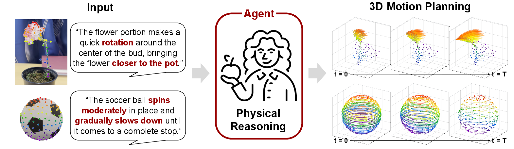
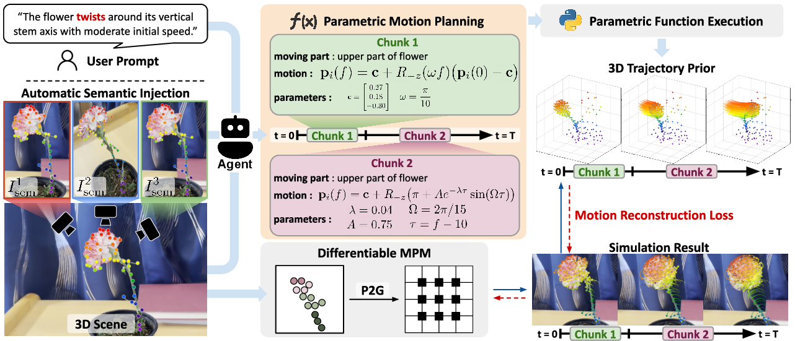
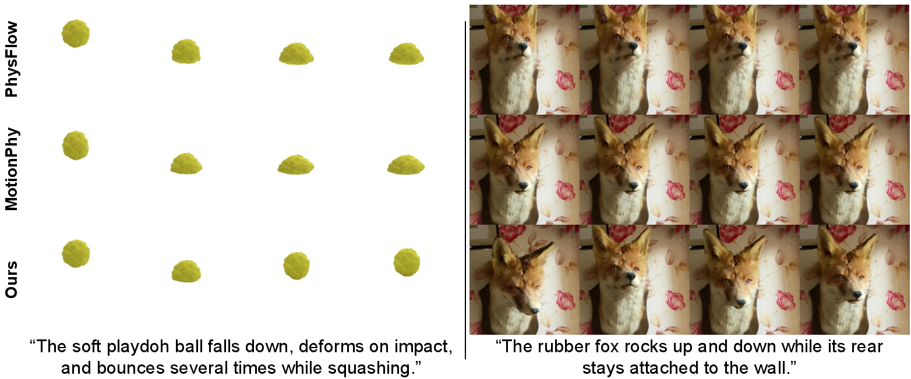

AgentDreamerAgentic 3D Motion Reasoning for Text-Controllable Physics Simulation
1ECE & 2IPAI, Seoul National University
Under review
Abstract
We propose AgentDreamer, an agent-guided optimization framework that aligns text instructions with simulated motion through explicit 3D motion planning. Given a text instruction and scene geometry, an off-the-shelf agent translates the instruction into a structured semantic motion prior, specifying what should move, in which direction, and in what temporal order. The agent represents this prior using parametric functions over a series of temporal chunks, yielding dense 3D trajectories. We then optimize the parameters of a differentiable MPM simulator such that its rollout best matches the prior while remaining constrained by the scene dynamics.
We further introduce Motion-IG, an information-theoretic metric for text–motion alignment based on masked text recovery. Experiments show that AgentDreamer improves text alignment over video-based guidance, producing simulations that more closely follow the requested physical behavior.
The key idea: agent-generated 3D motion
A visually plausible video reference can still miss the requested motion, such as sliding instead of rolling. AgentDreamer plans how the object and its parts should move before optimizing the simulation.

- Scene-aware inputAnnotated views link sampled 3D control points to visible object parts.
- Parametric motion planThe agent describes motion with functions over temporal chunks, yielding dense trajectories.
- Physics optimizationThe trajectories supervise a differentiable MPM simulator while scene dynamics constrain the result.
Method
Text and a 3D scene enter an agent-based motion planner. Its parametric 3D trajectories become the target for differentiable physics optimization.

Qualitative Results
The examples below compare AgentDreamer with video-guided physics simulation methods under the same text instructions.

Quantitative Results
On 20 instructions across eight scenes, AgentDreamer obtains the highest average Motion-IG score among the compared methods. In a blinded evaluation with 25 participants, it is ranked first for text–motion alignment in 73.6% of rankings.
| Method | Open-weight Motion-IG ↑ | API-based Motion-IG ↑ | Human first rank ↑ |
|---|---|---|---|
| PhysFlow | 0.52 | −0.22 | 14.0% |
| MotionPhysics | 0.52 | −0.63 | 12.4% |
| AgentDreamer | 0.71 | +0.48 | 73.6% |
Motion-IG measures how much simulated motion improves recovery of masked motion words beyond the remaining text and scene context. Open-weight scores average four evaluators; API-based scores average five evaluators. Higher is better. See the paper for the full protocol.
BibTeX
@misc{agentdreamer2027,
title = {AgentDreamer: Agentic 3D Motion Reasoning for Text-Controllable Physics Simulation},
author = {Kim, Mijeong and Park, Suho and Park, Junha and Han, Bohyung},
year = {2027},
note = {Under review}
}